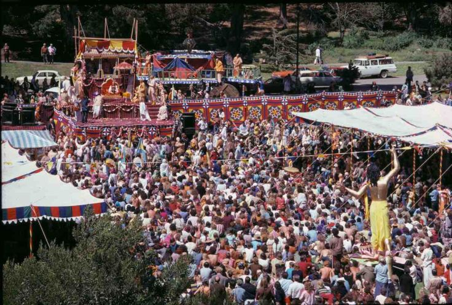

Why you trust Śrīla Prabhupāda So much?
Posted on : 4th June, 2025

We sometimes hear devotees sing the Hare Kṛṣṇa mantra to the tune of an old rock song or some popular Bollywood number. For those who know the source, this may naturally evoke memories far away from Kṛṣṇa consciousness. Thankfully, the once-popular “La Cucaracha” kīrtana seems to have become a thing of the past.¹
Sometimes the tune wrecks the mantra. To fit an attractive tune, I’ve heard even respected kīrtana leaders chant (without realizing it) one extra “hare”: “kṛṣṇa kṛṣṇa hare hare... hare.”
Tunes difficult to follow can also be problematic. Chant tunes people can follow.
In recent years, a fashion has developed for a sort of “art song” version of kīrtana, with tunes and style well suited for people blessed with an accurate musical ear, technical proficiency with instruments, and a wide vocal range, from high notes to low. If that’s you, you’ll fit right in. If it’s not, you’re left out.
Śrīla Prabhupāda sang simple tunes anyone could follow and fall right into. His kīrtana was something for everyone to take part in, not a type of performance art for the musically gifted.
As mentioned earlier, Kripamoya Dāsa has said, “I try to chant in such a way that I know that everybody can join in. I don’t tend to sing unfamiliar tunes. I sing familiar tunes that I think the devotees will know, just so they can become absorbed.”
Regarding the most familiar “Prabhupāda tune”—the one Śrīla Prabhupāda chanted at Tompkins Square Park—the stalwart kīrtana leader Locanānanda Dāsa writes :
In my experience, I have found that it was the chanting of Srila Prabhupada’s favorite tune that was all-attractive. It is also the easiest tune for the public to embrace. In nearly every public appearance, this was the preferred tune sung by Srila Prabhupada. I would estimate that 90% of our chanting whenever I am leading kirtana is the Hare Krishna Maha-mantra, and 90% of our chanting of the Maha-mantra is the chanting of Srila Prabhupada’s tune.²
Is this a rule? No, but a valuable realization.
Notes :
1 “La Cucaracha” is a popular Mexican folk song about a cockroach.
2 Personal communication, October 20, 2021.
Ref ~ Śrīla Prabhupāda's Kirtana Standards a hand book by HH Jayādvaita Swāmi pg. 148-149
Jay Śrīla Prabhupāda!